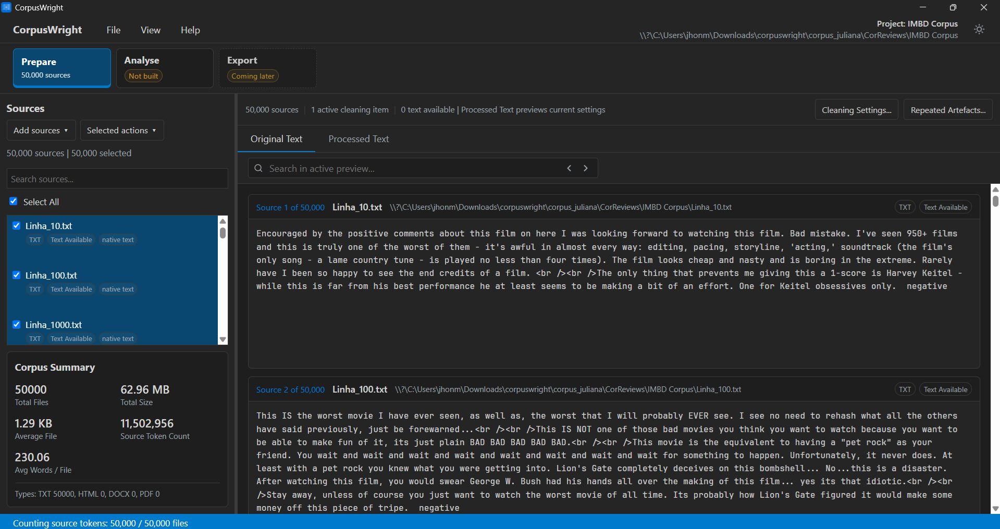
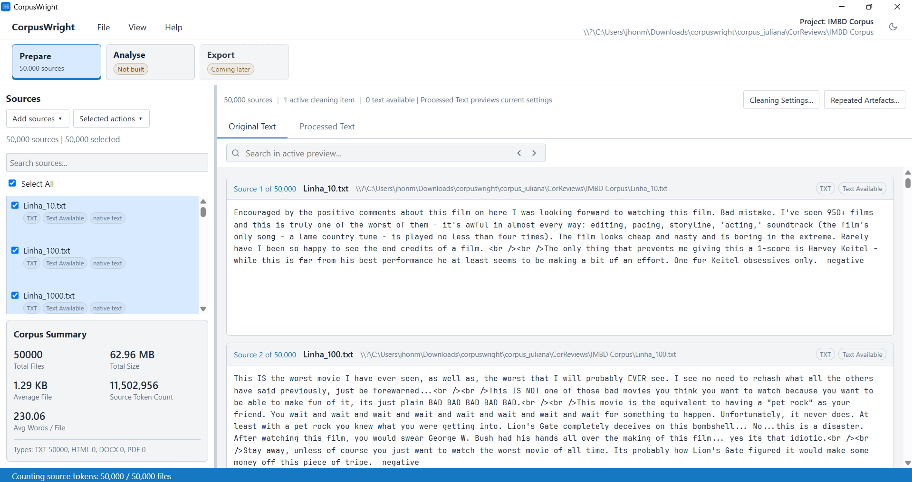
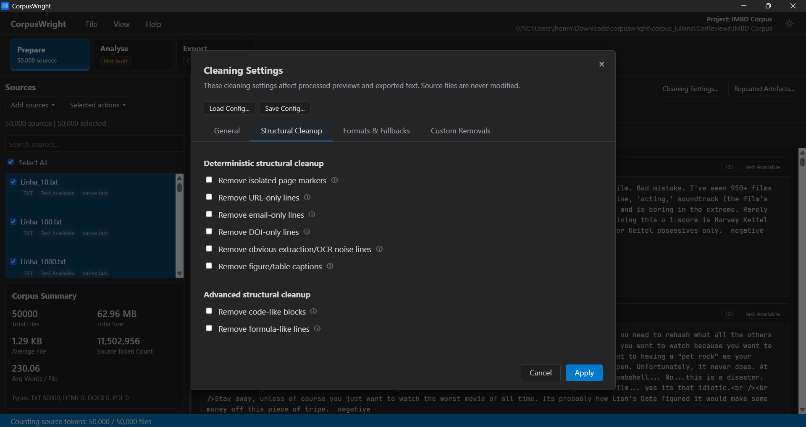
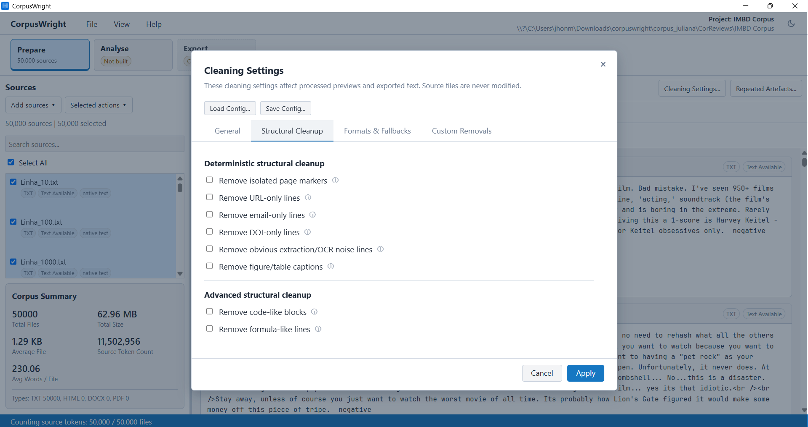
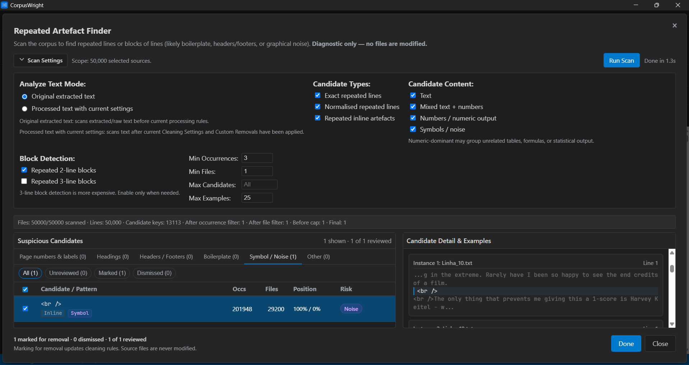
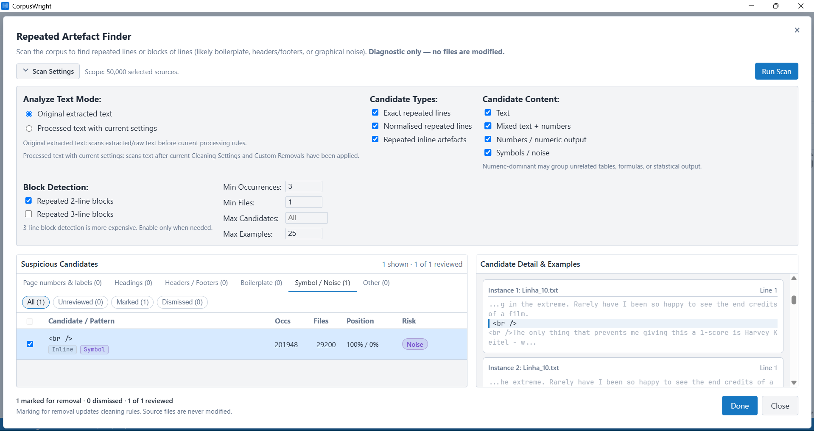

CorpusWright
A local-first corpus workbench.
A desktop application for building, cleaning, and analysing research corpora — entirely on your machine, with every step recorded and repeatable.
Current status
CorpusWright is in alpha. Functionality is grouped below by maturity.
Available
stable- Local project folders
- Corpus sources and project state are stored locally.
- Source extraction
- TXT, HTML, DOCX, and PDF sources are supported.
- Cleaning configuration
- Deterministic processing options with processed-text previews.
- Repeated-artefact finder
- Detects recurring corpus noise such as headers, footers, and boilerplate.
- Structured custom removals
- Explicit removal rules for known text artefacts.
- Frequency list
- Corpus-level frequency inspection.
Experimental
unstable- Lemma / POS annotation
- Annotation support is present but still being stabilised.
Planned
upcoming- KWIC / concordance
- Part of the upcoming Explore workbench.
- Collocation analysis
- Positional indexes and transparent association measures.
Interface
Screenshots from the current alpha, provided as interface documentation.






Documentation
Implementation notes, supported formats, testing notes, and release history.
Citation
Please cite the version of CorpusWright used in your work. The repository includes a CITATION.cff file with citation metadata.
Lopes, J. H. (2026). CorpusWright (Version 0.1.0-alpha.7) [Computer software]. https://github.com/jhlopesalves/CorpusWright
BibTeX
@software{lopes_corpuswright_2026,
author = {Lopes, Jhonatan Henrique},
title = {CorpusWright: a Rust corpus workbench},
year = {2026},
version = {0.1.0-alpha.7},
url = {https://github.com/jhlopesalves/CorpusWright},
note = {ORCID: 0009-0008-4914-0262}
}